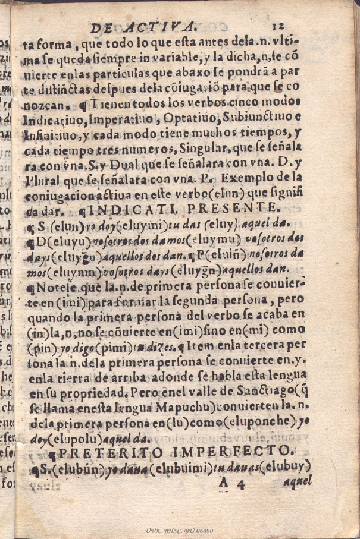
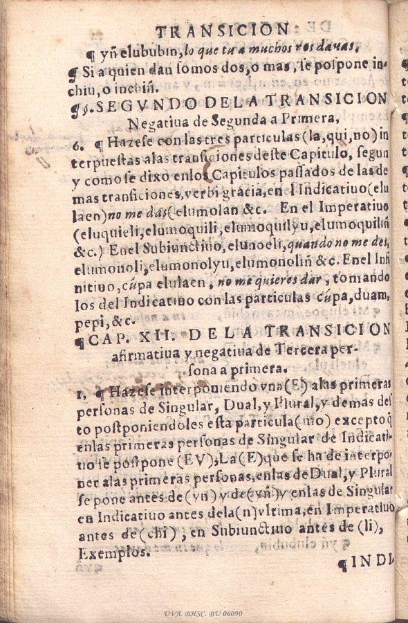
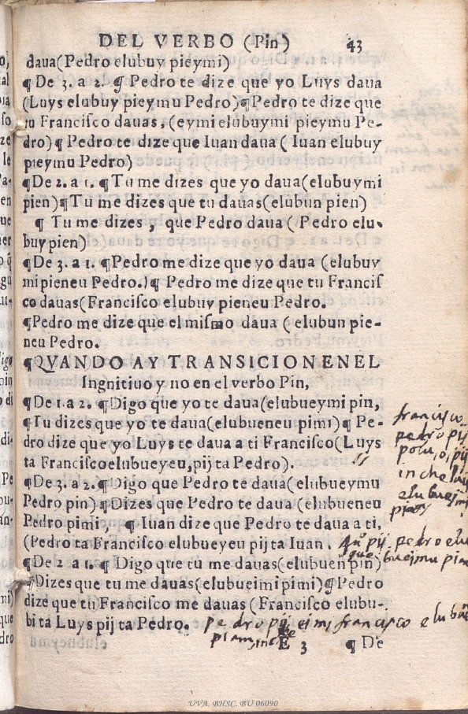
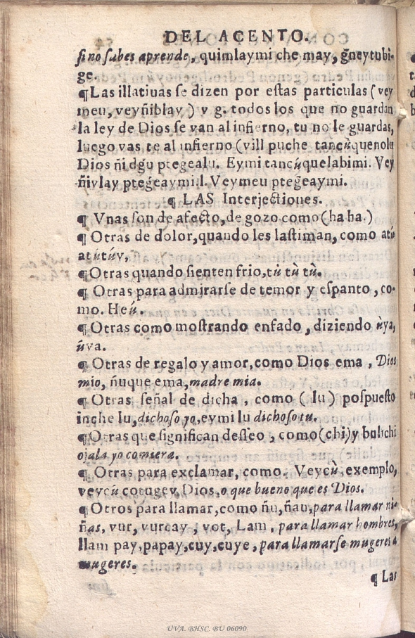

Arte de la Lengva de Chile
en Valdivia (1606), con un menú que permite acceder a las entradas.
Capítulo 1 De la pronunciación y Orthographia


Capítulo 2: De la primera parte de la oración que es el nombre
Capítulo 3: Del pronombre
Capítulo 4: Del verbo en la voz activa

Capítulo 5: De las partículas, que forman los tiempos y personas de la conjugación pasada
Capítulo 6: Del verbo substantivo ǵen, que es sum es fui
Capítulo 7: De la voz impersona de cada verbo

Capítulo 8: De la voz pasiva
Capítulo 9: Del verbo negativo
Capítulo 10: De la transición del vebro de primera persona a segunda

Capítulo 11: De la transición de tercera a segunda afirmativa y negativa
Capítulo 12: De la transición afirmativa y negativa de segunda persona a primera

Capítulo 13: De la transición afirmativa y negativa de tercera persona a primera

Capítulo 14: De las partículas en que se terminan las cuatro transiciones
Capítulo 145: De las otras dos transiciones
Capítulo 16: De la construcción de los Nombres, Verbos y Participios


Capítulo 17: De la construcción del verbo ǵen
Capítulo 18: Del verbo pin


Capítulo 19: De las partículas que juntas a los verbos les hacen mudar significación


Capítulo 20: De los nombres relativos
Capítulo 21: De los nombres comparativos y superlativos
Capítulo 22: De los nombres de números y medidas
Capítulo 23: De los nombres de tiempo y edad
Capítulo 24: De los nombres de parentescos
Capítulo 25: De los adverbios
Capítulo 26: De las preposiciones
Capítulo 27: De las conjunciones

Capítulo 28: Final del acento